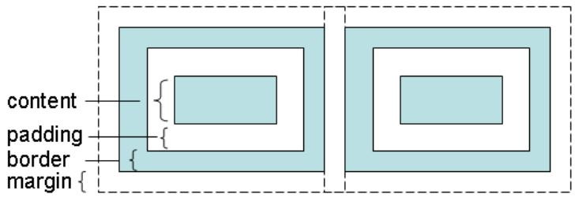
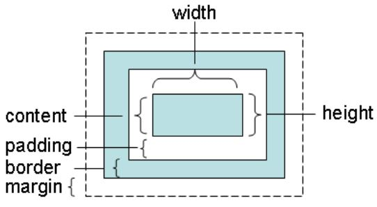
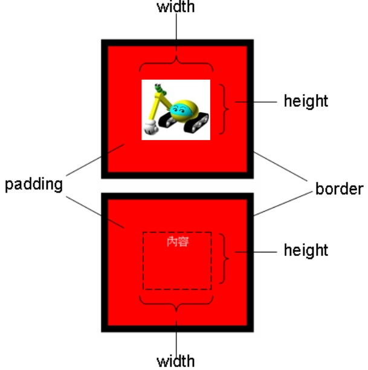
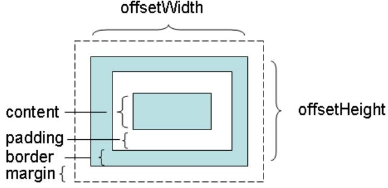

可以透過樣式的 width 與 height 來設定元素的寬高，但要注意所謂的寬高定義為何，一個元素的寬高如何定義，要看盒模式（Box model），也就是將元素當作一個盒子來看待，每個元素都會有四個部份可以設定。

內容（content）就是放置元素真正有內容的部份，像是一段文字、一個圖片或者是其它子元素。每個元素都可以有邊框（border）。內距（padding）是指內容區與邊框的距離。邊距（margin）則是指與另一元素的邊框距離。內容可以設定寬、高，內距的上、下、左、右可以分別設定距離，邊框可以設定寬度，而邊距的上、下、左、右可以分別設採定距離。
當指定元素的 width 與 height 時，在標準 CSS 盒模型，指定的 width、height 僅指定內容區大小。

在遵守標準的瀏覽器中，就是採取這種盒模型。例如下面這個範例：
<!DOCTYPE html>
<html>
<head>
<meta charset="utf-8">
<meta name="viewport" content="width=device-width">
<style type="text/css">
img {
color: #ffffff;
background-color: #ff0000;
border-width: 10px;
border-color: black;
border-style: solid;
width: 100px;
height: 82px;
padding: 50px;
margin: 10px;
}
div {
color: #ffffff;
background-color: #ff0000;
border-width: 10px;
border-color: black;
border-style: solid;
text-align: center;
width: 100px;
height: 82px;
padding: 50px;
margin: 10px;
}
</style>
</head>
<body>
<img src="https://openhome.cc/Gossip/images/caterpillar_small.jpg">
<div>內容</div>
</body>
</html>
範例中的圖就是內容區，寬、高為 100x82，加上內距 50px 與邊框 10px，元素視覺上看得到的部份為 (100+502+102)x(82+502+102)，也就是 220x202。下方了一個內容區寬、高，內距與邊框相同的 <div> 以資對照。

每個元素都會有 offsetWidth 與 offsetHeight 特性，這兩個特性是唯讀的，可分別取得元素的寬與高，在標準 CSS 盒模型下，所取得的是邊框、內距與內容區的加總大小：
